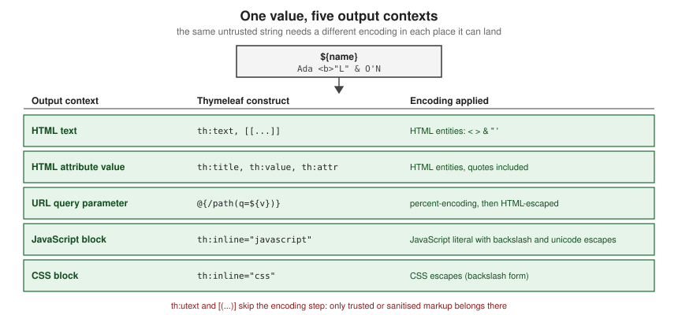

Template Security & XSS
|
This content was generated with the assistance of AI and should be verified against the official documentation before being relied on in production. |
This page is written against Thymeleaf 3.1.5.RELEASE (2026-04-21), Spring Boot 4.1.1 (Spring Framework 7.0.9) and Java 21, checked on 2026-10-08, and every example was compiled and run on that stack (Spring Boot with Spring MVC, rendered through MockMvc; the output shown is what the engine produced). 3.1.5 is the minimum version this section teaches: 3.1.4 fixed two critical expression-sandbox bypasses and 3.1.5 fixed a third (see the CVE table below). Everything on this page applies to Thymeleaf standalone, with Spring MVC and with Spring WebFlux alike, because escaping and expression restrictions live in the Standard Dialect; only the view-name examples are Spring MVC specific. Thymeleaf escapes output by default, so most cross-site scripting (XSS) in Thymeleaf applications comes from three places: opting out of escaping, putting a value into a context its escaping was not designed for, and letting request data reach the template engine itself.
In a hurry: the rules
| Rule | Why |
|---|---|
Use |
HTML-escaped for the text context; the default and the safe choice. |
Put server values into JavaScript only through |
The inliner produces a valid JavaScript literal; string concatenation does not. |
Use |
They skip escaping, so any markup in the value reaches the browser. |
Never build a view name, template name or fragment selector from request input |
It lets a user choose which template or expression the engine evaluates. |
Never let users author templates |
Template source is code; the restrictions are defence in depth, not a sandbox. |
Stay on 3.1.5 or later |
Three sandbox bypasses (CVE-2026-40477, CVE-2026-40478, CVE-2026-41901) were fixed in 3.1.4 and 3.1.5. |
Send a Content Security Policy with per-request nonces |
A second line of defence if a script ever gets injected. |
Escaping by output context
An escaping function is only correct for one place in the output. Text inside a tag body, a quoted attribute, a URL, a script block and a style block all end on different characters, so a value that is safe in one can break out of another. Thymeleaf picks the encoder from the construct you use, as the figure shows.

The example puts one hostile-looking name, containing markup, double and single quotes and an ampersand, into each context. The controller supplies the value:
@GetMapping("/security/contexts")
String contexts(Model model) {
model.addAttribute("name", "Ada <b>\"Lovelace\"</b> & O'Neil");
return "security/contexts";
}Source: Using Thymeleaf — Unescaped Text
and the template renders it five ways:
<p th:text="${name}">text</p>
<a href="#" th:title="${name}" th:href="@{/search(q=${name})}">attribute and URL</a>
<script th:inline="javascript">
const reader = /*[[${name}]]*/ 'sample';
</script>
<style th:inline="css">
.badge::after { content: [[${name}]]; }
</style>Source: Using Thymeleaf — Inlining
The output produced on Boot 4.1.1:
<p>Ada <b>"Lovelace"</b> & O'Neil</p>
<a href="/search?q=Ada%20%3Cb%3E%22Lovelace%22%3C/b%3E%20%26%20O'Neil" title="Ada <b>"Lovelace"</b> & O'Neil">attribute and URL</a>
<script>
const reader = "Ada <b>\"Lovelace\"<\/b> & O'Neil";
</script>
<style>
.badge::after { content: Ada\ \<b\>\"Lovelace\"\<\/b\>\ \&\ O\'Neil; }
</style>What to notice:
-
Text and attribute values are HTML-escaped, including both kinds of quote, so a value cannot close an attribute early.
-
A link parameter is percent-encoded for the URL and then HTML-escaped for the attribute it sits in. Only the parameters of a link expression are encoded; the base part of the URL is a different problem, covered under restricted mode below.
-
The JavaScript inliner writes a quoted string literal, escapes the closing-tag sequence and replaces the ampersand with a unicode escape, so the value cannot end the script element.
-
The CSS inliner writes backslash escapes. A CSS identifier is what you get here, not a quoted string, so use inlined CSS for values you would otherwise validate (colours, sizes) and prefer a class name chosen by the server.
-
Inlining of text is active in element bodies, but never inside the tag itself. An attribute such as
title="[[${name}]]"is not inlined at all; useth:titleorth:attr.
The one construct that is not safe for values is string-building JavaScript yourself, for example putting a [[...]] inside a quoted string in a script that is not inlined as JavaScript. Without th:inline="javascript", a script body gets the HTML text encoder, which is not a JavaScript encoder.
When th:utext and the unescaped inlines are acceptable
th:utext and [(${x})] output the value as markup, exactly as it is. That is what you need for text that legitimately contains tags, such as a message with a bold word in a resource bundle that your own team writes, or the sanitised output of a rich-text field.
It is never acceptable for raw request parameters, form fields, database content written by users, or the body of a third-party response (release notes, feeds, Markdown rendered to HTML), because every tag, event handler attribute and script element in the value becomes live in the page.
In the Bookshelf scenario a reader can attach a formatted note to a book, which is exactly this kind of text. The safe pattern for user-supplied rich text is to sanitise it with an allow-list policy before it reaches the model, and to keep the sanitiser in application code, not in the template. The OWASP Java HTML Sanitizer builds such a policy:
<dependency>
<groupId>com.googlecode.owasp-java-html-sanitizer</groupId>
<artifactId>owasp-java-html-sanitizer</artifactId>
<version>20260924.2</version>
</dependency>Source: OWASP Java HTML Sanitizer
final class HtmlSanitizing {
static final PolicyFactory POLICY = new HtmlPolicyBuilder()
.allowElements("p", "b", "i", "em", "strong", "ul", "ol", "li", "a")
.allowUrlProtocols("https")
.allowAttributes("href").onElements("a")
.requireRelNofollowOnLinks()
.toFactory();
private HtmlSanitizing() {
}
}Source: OWASP Java HTML Sanitizer
@GetMapping("/security/notes")
String notes(Model model) {
String submitted = "<p>Nice book</p><script>doSomething()</script><a href=\"https://example.com\" onclick=\"x()\">link</a>";
model.addAttribute("notes", HtmlSanitizing.POLICY.sanitize(submitted));
return "security/notes";
}Source: Using Thymeleaf — Unescaped Text
<div th:utext="${notes}">notes</div>Source: Using Thymeleaf — Unescaped Text
The rendered result keeps the allowed tags and drops the script element and the event handler:
<div><p>Nice book</p><a href="https://example.com" rel="nofollow">link</a></div>Source: OWASP Java HTML Sanitizer
Two further points. Sanitise on output (or at least keep the raw value and the sanitised value apart), so that a policy change fixes old data too. And remember that th:utext is also evaluated in restricted expression mode (next sections), which restricts the expression but never the value.
The general class restrictions
Thymeleaf’s Appendix D describes two layers.
The first, the general restrictions, applies to every expression in every context: static use (instantiation and static method calls) of most classes from Thymeleaf’s, Spring’s and the Java and Jakarta base infrastructure is forbidden, together with a list of well-known third-party framework packages. The tutorial states plainly that this is not an exhaustive filter, only a helper that bans the most obvious classes that could be misused.
In the 3.1.5 jar the check is implemented in org.thymeleaf.util.ExpressionUtils as a combination of blocked package prefixes (for example the reflection, bytecode, scripting-language and application-server packages), a short allow-list of harmless types that are exempted from those blocks, and a list of members that may not be called on some objects. The lists are an implementation detail that changed between 3.1 patch releases (for instance, 3.1.2 added a ban on static access to the Spring utility package, as the Spring Boot Admin advisory below records), so read the release notes when you upgrade and do not depend on a particular type being reachable.
The following template tries to instantiate a class the general rules ban, in an ordinary escaped th:text:
<p th:text="${new java.io.File('x').getName()}">instantiation of a blocked class</p>Rendering it with a Spring MVC controller throws, and the root cause is Spring’s expression evaluator reporting the type the rules refuse:
org.springframework.expression.EvaluationException: Access is forbidden for type 'java.io.File' in this expression context.Restricted expression evaluation mode
The second layer is restricted mode, a stricter set of rules that is switched on only in specific places, chosen because the expression there either runs before the engine knows what it is outputting or ends up somewhere dangerous. Per the tutorial, it applies to:
-
preprocessing expressions written between double underscores;
-
th:utextand unescaped inlined expressions ([(...)]); -
every
th:on*event-handler attribute whose value is a Standard Expression; -
th:attrwhen it creates attributes with arbitrary names, and the default attribute processor, which renders anyth:*attribute without a dedicated processor; -
template names, fragment names and fragment parameters in
~{...}expressions and inth:insert,th:replaceandth:include; -
the base (non-parameter) part of URL expressions:
@{...}bases,th:hrefandth:src; the parameters inside a link expression are not restricted; -
every output expression in the TEXT template mode, whether escaped or not.
In those places the engine forbids request-parameter access through ${param.*}, instantiating new objects, static class access (OGNL @x@ and Spring EL T(x)), some context utility objects such as #execInfo, and in a Spring application @beanName access to application-context beans. In th:on* attributes, variable expressions whose result is not a number or boolean are also rejected.
The restrictions cannot be turned off for one expression or template. Violating one raises a TemplateProcessingException at render time, and Appendix D adds that a restriction error after an upgrade usually means the expression was doing something risky: compute the value in application code and put it in the model instead.
The same static call shows the difference between the two modes. In an escaped th:text it works:
<p th:text="${T(java.lang.Math).abs(-3)}">static call in escaped output</p>and renders <p>3</p>. The identical expression in th:utext, and a request parameter read in th:utext, are rejected:
<p th:utext="${T(java.lang.Math).abs(-3)}">same static call in unescaped output</p>
<p th:utext="${param.q}">request parameter in unescaped output</p>Both throw, with this message (the template name and position differ):
org.thymeleaf.exceptions.TemplateProcessingException: Instantiation of new objects and access to static classes or parameters is forbidden in this context (template: "security/restricted" - line 4, col 4)The tutorial’s own reminder applies: these checks are defence in depth, not a first line of defence, and they are not performed anywhere outside the contexts listed above, so expressions elsewhere run unrestricted.
Server-side template injection
Server-side template injection (SSTI) happens when attacker-controlled text is treated as template source or as an expression instead of as data. In Thymeleaf the data model is safe; the engine itself is the attack surface. Three patterns cause almost every case, described here by shape only.
View names and fragment selectors from request input
A Spring MVC handler that returns a view name concatenated with a request parameter, or builds a fragment expression from one, lets the caller choose what the engine loads and evaluates. View names and fragment expressions (the ~{...} syntax) are resolved and evaluated by the engine, and preprocessing (__...__) runs an expression to build another expression. A parameter that reaches any of these can select an arbitrary template, an arbitrary part of a template, or an expression the author never wrote. The Thymeleaf project describes this class of mistake as passing unvalidated user input directly to the template engine in every advisory below.
The remedy is an allow-list: the request chooses a key, and the application maps the key to a constant view name. The Bookshelf help pages are a typical case, a page parameter that must never become the view name directly.
private static final Map<String, String> HELP_PAGES = Map.of(
"borrowing", "help/borrowing",
"returns", "help/returns");
@GetMapping("/security/help")
String help(@RequestParam String page) {
String view = HELP_PAGES.get(page);
if (view == null) {
throw new ResponseStatusException(HttpStatus.NOT_FOUND);
}
return view;
}A request for ?page=borrowing renders the help page, and any other value returns 404 (this was run: the unknown key produced status 404). The same applies to fragment names: pick from a fixed set, never pass the parameter through to th:insert or th:replace, and never use __${param.x}__ preprocessing.
Templates edited by users
Template source is code. Letting administrators or customers edit templates (email designers, CMS themes, notification templates) means letting them write expressions, and the restrictions above are not a sandbox that makes this safe. If you must offer it, give the editors a much smaller language (a placeholder syntax of your own, or Markdown) and render it in application code, then pass only the result to Thymeleaf as a sanitised value. Never feed user-edited text to a StringTemplateResolver or to a database-backed template resolver in the HTML or TEXT mode that has access to the full dialect.
CVE-2023-38286 is the textbook case in a real product: in Spring Boot Admin the advisory describes a template sandbox bypass that mattered when mail notifications were enabled and an operator could write environment variables through the UI, so data that an operator controlled ended up where the engine evaluated it.
Known vulnerabilities
Every row below was checked on 2026-10-08 against the GitHub Advisory Database (queried with the GitHub REST advisories endpoint by CVE id). All five are classified as injection into an expression or template; none is exploitable unless untrusted input reaches the template engine or a sandboxed context.
| CVE (advisory) | Component | Affected versions | Fixed in | What it was |
|---|---|---|---|---|
CVE-2021-43466 (critical, CVSS 9.8) |
|
3.0.12 and earlier |
3.0.13.RELEASE |
Template injection in the Spring 5 integration that may lead to remote code execution in specific scenarios. Predates Thymeleaf 3.1. |
CVE-2026-40477 (critical, CVSS 9.0) |
|
3.1.3.RELEASE and earlier |
3.1.4.RELEASE |
The sandbox did not properly restrict the scope of objects reachable from an expression, so sensitive objects could be reached when untrusted input was passed to the engine. |
CVE-2026-40478 (critical, CVSS 9.0) |
|
3.1.3.RELEASE and earlier |
3.1.4.RELEASE |
Specific syntax patterns were not neutralised, so expressions the sandbox is meant to refuse could run. |
CVE-2026-41901 (critical, CVSS 9.0) |
|
3.1.4.RELEASE and earlier |
3.1.5.RELEASE |
Constructs that should be rejected in sandboxed (restricted) contexts were not recognised, so unsanitised values used in those contexts could be executed as expressions. |
CVE-2023-38286 (high, CVSS 7.5) |
|
3.0.0 up to 3.1.1, and 2.x before 2.7.16 |
3.1.2 and 2.7.16 |
Sandbox bypass through crafted HTML when mail notifications were enabled and environment variables were writable through the UI. The advisory states Thymeleaf itself is not considered vulnerable; Thymeleaf 3.1.2 added counter-measures (forbidding static access to the Spring utility package), and the Boot Admin releases mitigate it. |
None of the four Thymeleaf advisories lists a workaround other than not passing unvalidated input to the engine, so the action is to upgrade: use 3.1.5 or later (thymeleaf-spring6 3.1.5 is what Spring Boot 4.1.1’s starter brings in, and the dependency tree should be checked rather than assumed). The advisory pages give no detail beyond the impact, and this page deliberately does not describe how any of them is triggered.
Content Security Policy and inline scripts
A Content Security Policy (CSP) tells the browser which scripts it may run. A policy that bans inline scripts defeats most XSS even if an injection slips through, but it also blocks the inline <script> blocks that JavaScript inlining produces. The standard way out is a nonce: a fresh unpredictable value per response, sent in the Content-Security-Policy header and repeated as the nonce attribute on each inline script you wrote.
A servlet filter generates the nonce, stores it as a request attribute (so it reaches the template as the variable cspNonce) and sets the header:
@Component
class CspNonceFilter extends OncePerRequestFilter {
private final SecureRandom random = new SecureRandom();
@Override
protected void doFilterInternal(HttpServletRequest request, HttpServletResponse response, FilterChain chain)
throws ServletException, IOException {
byte[] bytes = new byte[16];
random.nextBytes(bytes);
String nonce = Base64.getEncoder().encodeToString(bytes);
request.setAttribute("cspNonce", nonce);
response.setHeader("Content-Security-Policy",
"default-src 'self'; script-src 'self' 'nonce-" + nonce + "'; object-src 'none'");
chain.doFilter(request, response);
}
}and the template adds the attribute with the default attribute processor, which renders th:nonce as nonce:
<script th:nonce="${cspNonce}" th:inline="javascript">
const page = /*[[${page}]]*/ 'books';
</script>The response carried the header and the attribute, with the value varying on every request (a real nonce is shown here replaced by a placeholder):
Content-Security-Policy: default-src 'self'; script-src 'self' 'nonce-BASE64-VALUE'; object-src 'none'
<script nonce="BASE64-VALUE">
const page = "books";
</script>Notes:
-
The nonce must be unpredictable and new on every response, and it must never appear in a cached page or a URL.
-
The default attribute processor runs in restricted mode, so a nonce read from a model attribute is fine, while one computed with static calls in the template is rejected. Generate it in application code, as above.
-
A nonce protects only scripts you tag. Do not add nonces to scripts that contain untrusted data, and keep event-handler attributes (
onclickand friends) out of templates, since a nonce does not cover them; attach handlers from a script file instead. -
The inlined data (
/*[[${page}]]*/) is still escaped by the JavaScript inliner; the nonce and the escaping are two independent layers. -
Spring Security can also set a static CSP header through its HTTP headers configuration, but a per-request nonce needs code like the filter above.
What the books got wrong
Two books are used as source material for this section, and both predate the current escaping guidance in places. In summary, the security mistakes worth correcting are these (described in the page’s own words, with the correct form):
-
User-controlled text spliced into JavaScript strings. One of the books fills an Alpine.js data object by interpolating a person’s full name into a quoted JavaScript literal. The result breaks for names with an apostrophe and, worse, lets a crafted name run script. Pass the value through JavaScript inlining or a
data-*attribute instead (see Inlining). -
Third-party Markdown rendered with
th:utext. The other book converts Markdown from a remote release feed to HTML and outputs it unescaped. Treat converted HTML as untrusted: sanitise it with an allow-list policy first, as shown above, or escape raw HTML in the Markdown renderer. -
Markup assembled with string formatting. A file-upload example wraps text from an uploaded file in a div through a format string and returns it as a response. Return a Thymeleaf fragment so the value is escaped, rather than building HTML by hand.
-
A CSRF token travelling in the URL. With htmx 2 the hidden-field trick used for a DELETE request now ends up in the query string, where it is logged and cached. Send the token in a request header from a meta tag, or use the Spring-aware htmx dialect (see the Spring Security Integration page).
-
Credentials in source. Both books use literal passwords in in-memory users and seed data. Examples in this section use placeholders and mark test-only code as such.
Source: Taming Thymeleaf — Wim Deblauwe
Pitfalls
| Mistake | Effect | Fix |
|---|---|---|
|
Any markup, including script and event handlers, reaches the page. |
Sanitise with an allow-list policy first, or use |
A server value in a script without |
The HTML encoder is applied to JavaScript; quotes and closing tags are not handled. |
Use JavaScript inlining or a |
A value in |
A restricted-mode context; a non-numeric, non-boolean expression in |
Put the value in a |
A view name or fragment selector built from a parameter |
The caller chooses the template or expression that is evaluated. |
Map a request key to a constant view name through an allow-list. |
Preprocessing with |
Request data becomes part of an expression. |
Never preprocess untrusted values; compute them in the controller. |
User-edited templates in a string or database resolver |
Template authors can write expressions; the restrictions are not a sandbox. |
Offer a small placeholder language and render it in application code. |
Staying on 3.1.3 or older |
Open to CVE-2026-40477 and CVE-2026-40478 (3.1.3 and earlier) and CVE-2026-41901 (3.1.4 and earlier). |
Upgrade to 3.1.5 or later. |
Relying on restricted mode as input validation |
Restrictions apply only in the listed contexts and only to expression syntax, never to values. |
Validate input at the boundary, as Appendix D itself insists. |
CSP nonce that is static or cached |
The nonce can be guessed or replayed, so it protects nothing. |
Generate a new random nonce per response and never cache those pages. |